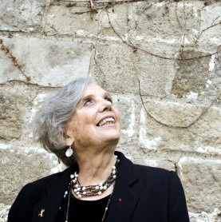

Por: Paquita de Armas.

La noticia ha corrido: Elena Poniatowska ha merecido el Premio Cervantes 2013.
Con sinceridad. hubiera preferido que lo recibiera la cubana Fina García Marruz, pero la mexicana también es digna de él. En el 2007 quise entrevistarla y no pude, pero lo hice para mi. Hoy comparto sus respuestas extraídas de una buena cantidad de textos. No me lo dijo a mí pero lo expresó o lo escribió para otra persona. Aquí está el Premio cervantes 2013.
Sobre Elena Poniatowska hay más de 356 mil citas en INTERNET. Durante la pasada feria del libro leí muchísimo sobre ella pero, casualidades de la vida, no pude acercarme grabadora en mano, para convencer a una excelente entrevistadora que se dejara entrevistar. Tenía confeccionadas las preguntas (quince), pero no
logré conseguir mis propósitos.
Esta mujer chaparrita, como buena cantidad de mexicanas, publicó en 1954 su primer libro Lilus Kikus y desde entonces otros 40 han visto la luz. La presentación de una de sus novelas, Tinísima, fue la aparente causa que la trajo a Cuba en febrero pasado. Digo aparente porque son muchas más las razones que
unen a esta mujer con la isla, que las posibles cosas que puedan separarla.
A San Carlos de la Cabaña, fue varias veces, también a Casa de Las Américas y otras instituciones culturales. En uno y otro lugar, en Cuba o en otros países, siempre con tanta dulzura como firmeza, conversó la descendiente de la casa real polaca por nacimiento y luchadora por convicción.
Al seguir sus pasos, no conseguí grabarle las respuestas que hubiera formulado para mis preguntas, pero si conozco las opiniones de Poniatowska sobre asuntos variopintos a partir de otras entrevistas y de sus charlas. Entonces, ahora que circula su nuevo libro Amanecer en el Zócalo. Los 50 días que confrontaron a México, una crónica del conflicto surgido en ese país durante las pasadas elecciones y que la autora ha recibido el premio Rómulo Gallegos ¿por qué no organizar estas ideas según lo hubiera hecho de tener sus respuestas?.
–Cuando empezó a hacer periodismo ¿Qué formación tenía?
-Yo no tengo la menor técnica, al contrario yo me inicié en el periodismo en
1953 y justamente salía yo de un convento de monjas, no tenía la menor técnica,
lo único que tenía era una curiosidad nata de establecer un diálogo con el
entrevistado y es lo que sigo haciendo hasta la fecha. Claro, ahora con más
conocimiento de causa que cuando me inicié (.) desde el primer día en que
publiqué un artículo seguí publicando hasta la fecha en que usted me ve(.)ahora
tampoco hago tantas entrevistas, más bien hago libro, crónicas, artículos de
opinión.
–¿Qué reconocimientos recuerda como periodista?
-Soy la primera mujer que obtuvo el Premio Nacional de Periodismo en 1979, pero
he recibidos muchísimos Doctorados Honoris Causa; y tanto por el periodismo como
por la literatura también he obtenido el Premio Mazatlán de Literatura, en dos
ocasiones, y el Premio Xavier Villaurrutia que rechacé en 1968 porque me lo
quisieron dar por un libro que se llama La noche de Tlatelolco y pregunté ¿quién
iba a premiar a los muertos? Y luego por muchos otros libros, así que yo nunca
me he puesto a contar en qué campo tengo más premios
–“Tengo el sello, la marca de fuego del periodista como un tatuaje que supongo
que nunca va a desaparecer. Y me enorgullece mucho serlo porque el periodismo me
ha dado todo lo que soy, todo lo que he aprendido y toda la gente a la que he
conocido” afirmó en una entrevista ¿Ha sido perseguida por la manera en la que
defiende la verdad?
-Sí, claro que he tenido problemas, el gobierno no me quiere, nunca me han
ofrecido un puesto público, pero no puedo decir que haya tenido problemas
graves, nunca me han encarcelado como lo han hecho con otros.
–¿Qué ha ganado con las entrevistas además de los libros publicados?
-Una gran amistad con los entrevistados y una posibilidad de conocer a mi país
que no hubiera conocido de otra forma y de conocer a la gente de mi país;
seguramente no me hubiera podido acercar a ellos si no es a través de las
entrevistas
–¿Qué recomienda para entrevistar?
– Les puedo decir (a los jóvenes), lo importante de que tengan fe en sí mismos,
que trabajen, que se informen, que se preparen lo mejor posible, en fin lo que
puede decir cualquier persona interesada en los jóvenes, eso es lo que les puedo
decir, yo nunca he sabido dar mensajes porque no creo que sea un ejemplo a
seguir simplemente les puedo decir lo que creo.
–Mujeres pobres, ferrocarrileros, indígenas, comunistas, estudiantes, son los
héroes y heroínas de sus obras ¿No le llama la atención escribir sobre sus
antepasados de la realeza polaca?
-Esa es una historia que ni siquiera tomo en cuenta. Sin embargo, respeto el
heroísmo del pueblo polaco, la valentía que los distinguía. Ellos eran capaces
de enfrentarse a los tanques de guerra, montados en sus caballos. Por eso admiro
tanto a los cubanos porque han tenido la fuerza y la convicción para enfrentarse
a un imperio tan potente y cruel como Estados Unidos, como David a Goliat.
En realidad mis voces, mi inspiración, son las voces de la calle, la vida
diaria, lo que nos pasa todas las mañanas, todas las tardes y las noches. Yo
creo que todos tenemos un fondo de tristeza de lo que no logramos. En el fondo
del alma o del espíritu tenemos un lugar donde los pensamientos duelen mucho,
donde hay tristezas que no decimos a nadie, pensamientos de fracaso que tampoco
comunicamos, y eso es parte también de la vida de un científico (el protagonista
de La piel del cielo).
–Colabora con López Obrador, ha entrevistado al Comandante Marcos, ¿Qué piensa
de la izquierda mexicana? ¿Y la de América Latina?
-Cuando me propuso que le colaborara le dije que sí por una razón muy simple:
no sé decir que no. Me pidió que me ocupara de asesorarlo en la cultura. Aunque
no creo en la clase política, ni soy política, ni me gusta, creo que López
Obrador es sincero; creo que lo que dice es verdad y que vale la pena apoyarlo.
Por eso lo hago.
Lo importante es no desaprovechar este resurgimiento, de la izquierda en América
Latina, para que puedan resolverse los problemas de hambre, de falta de salud y
de educación de millones de hombres, mujeres y niños latinoamericanos.
(Marcos)Es un héroe popular, un hombre que merece mis respetos y mi admiración
Su presencia ha sido muy beneficiosa porque por primera vez en nuestro país se
habla de las injusticias en contra de los 10 millones de indígenas”.
–Ha dicho que el libro suyo más importante es el que está haciendo o el que
empezará pronto ¿Cuál es ese ahora?
-La experiencia durante el plantón en la ciudad de México me emocionó mucho,
pero también me llenó de nuevas esperanzas, aunque estoy consciente de que el
cambio no será una cosa sencilla. Sin embargo, me alentó mucho la actitud del
pueblo durante las protestas en el Zócalo contra las elecciones presidenciales
fraudulentas y en apoyo a López Obrador. Por ahí va el libro. Una demostración
de que en mi país existen aún muchas cosas por descubrir y documentar.
–Se habla de un boom de mujeres escritoras no sólo en México sino en América
Latina ¿se considera parte de él?
-Ha habido un boom de mujeres escritoras si así se le puede llamar en torno a
figuras que son best sellers, sobre todo la figura de Laura Esquivel que ha
estado durante no sé cuantas semanas en el New York Times Review of books, que
ha tenido un gran triunfo económico; está también Ángeles Mastretta cuyos libros
y la novela Arráncame la vida que ha sido traducida a muchos idiomas, es un gran
éxito de librería; otras escritoras como Sara Sefcovich han tenido mucho éxito
pero eso no quiere decir todavía que alguna mujer sea mejor que Sor Juana Inés
de la Cruz que es todavía el mayor poeta mexicano como le dice Octavio Paz, y no
quiere decir eso que haya una escritora aún que se pueda comparar a Juan Rulfo o
que desbanque al novelista Carlos Fuentes, ya no se diga a Octavio Paz
No apuesto todo lo que tengo a ninguna literatura, apuesto lo que tengo a la
gente, a las causas sociales, pero no a la literatura. Creo que hay una
literatura que están haciendo las mujeres y eso es todo (.) Creo que es buena,
sí, desde luego, pero ya le dije, creo que ninguna ha desplazado a las
escritoras del pasado. Yo le puedo decir que Rosario Castellanos es una notable
escritora, obviamente la mujer más completa que hemos tenido después de Sor
Juana Inés de la Cruz
La lucha de las mujeres en América Latina es muy dura, porque las mujeres en
general que se dedican a la literatura o son solteras o son suicidas. Y la lista
de mujeres suicidas es enorme: a la escritora puertorriqueña Julia de Burgos, la
encontraron muerta y la depositaron en un anfiteatro con una señal en el pie que
decía que no había sido reclamada; Alfonsina Storni entró por su decisión al mar
y se ahogó, después las olas devolvieron su cuerpo a la playa. En México, la
también escritora Antonieta Rivas Mercado se dio un balazo con el revólver de su
amante, el escritor y ministro José Vasconcelos. Creo que la situación de las
mujeres sí ha sido muy dura, pues han sentido el rechazo y les ha resultado más
difícil escribir.
–Pero Usted se ocupa también de mujeres que viven anónimamente.
-Las mujeres indígenas en Chiapas siempre han sido maltratadas y olvidadas, la
mayoría de los indígenas son muy pobres, casi miserables. La miseria de ellos
nos acogota, pero a las mujeres les va mucho peor. Las mujeres que entraron en
el EZLN tuvieron muchísimas dificultades, siguieron a una comandante muy
chaparrita, más chaparrita que yo, la comandante Ramona y pidieron el derecho de
no ser entregadas, como es la costumbre, a casa de los suegros donde si venía el
pretendiente eran cambiadas por un garrafón de alcohol pésimo. Ahora las mujeres
levantan la voz y dicen que quieren decidir cuántos hijos tener, que quieren ser
dueñas de su cuerpo, escoger a su hombre. La situación de la mujer era terrible,
por eso, que una mujer sea escogida para hablar en el Congreso ha estado muy
bien, y además lo ha hecho muy conmovedoramente, creo que es algo que todos las
mujeres y a todos los hombres, incluso a los diputados del PRI y del PAN nos
conmovió tremendamente
¿Por qué Tinísima?
-Surge a petición de Gabriel Figueroa. Él deseaba un argumento cinematográfico
para llevarlo al cine. Empecé a investigar. Fue en una buena época, aún vivían
la mayoría de los contemporáneos de Tina, algunos de ellos excompañeros o
excomunistas que la conocieron. Tuve la oportunidad de entrevistar a su último
amante, Vittorio Vidali. Para ello viajé a Grecia, donde establecí contacto con
él. Te puedo decir que Tinísima es un libro bien documentado y una suerte para
mí realizarlo; paradójicamente el guión de cine jamás se realizó. Un aspecto
importante de este proceso de investigación fue el descubrir la decepción de los
antiguos comunistas, me conmovió mucho ese desencanto. Por ello, después de
recopilar el material, y para no decepcionarlos más, decidí hacer la novela (.)
Tina fue importante, se le considera fotógrafa mexicana; en la actualidad es
reconocida en todo el mundo. Ahora hay siete u ocho libros dedicados a ella
escritos por autores de diversos países (.) No concibo a Tina como feminista.
Ella estaba consciente de que la mujer es dueña de su cuerpo y merece equidad
ante la sociedad, pero no creo que haya participado en actividades feministas.
Respecto a mí, soy feminista desde hace mucho, soy una de las fundadoras de la
revista Femme y en la actualidad pertenezco a otras asociaciones de este tipo.
Octavio Paz se enojó conmigo durante 10 años y no me dirigía la palabra, me
hacía unas caras de odio que si me veía a treinta metros me echaba ojos de
puñal, porque él si se enamoró de Tina Modotti, y me dijo que cómo era posible
que dedicara mi tiempo a una comunista, que él me había avisado que yo no
escribiera sobre ella. Pero yo en primer lugar ya había hecho entrevistas a
todos los viejos comunistas mexicanos y en segundo lugar ya llevaba muy
trabajada la novela, así que no me detuve a pesar en su furia.
–¿Qué me dice de sus encuentros con Cuba?
-Fue el primer país de América Latina que conocí, siendo muy pequeña, cuando mi
mamá decidió regresar a su tierra, junto a mi hermana y a mí, procedente de
Francia, país donde nací. Recuerdo que nos embarcamos en Bilbao, porque
estábamos en Toulouse. Y no olvido que un señor con no muy buenos modales se nos
acercó, y mi madre exigió respeto, asegurándole que estaba hablando con unas
princesas.
(En 1959) Vine invitada por Manolo Barbachano porque trabajaba yo en una cosa
que se llamaba Televerdad. Le hice una entrevista a Carpentier y una crónica del
viaje con Lázaro Cárdenas. Me acuerdo que en una comida me sentaron a su lado y
cuando pidió una Coca-Cola le dije que no se la podía tomar (.) Era muy
emocionante para todos. (Fernando) Benítez iba gritando por las calles: ‘ “¡Aquí
ninguna parte del cuerpo es vergonzosa, miren cómo se mueven las cubanas!”, y él
se movía para todos lados. Todavía eran muy gorditas las cubanas, ahora ya las
veo flaquitas (.) Vi llegar a los guajiros a La Habana. Eso fue impresionante.
Caminaban por las avenidas con sus grandes sombreros de paja. En la noche hubo
un discurso de Fidel y, como siempre, habló muchísimo. Todos los guajiros
aplaudían con sus machetes y entonces se oía un rumor de fragua, así como de un
poema de Federico García Lorca, ¡taz, taz, taz! Como todo estaba iluminado, se
veían los brillos de los machetes como una ola de acero por encima de las
cabezas de los campesinos. Había letreros en las ventanas de los hoteles, en los
aparadores de las tiendas que decían: “Compañero guajiro, aquí puedes dormir”.
Venían de Matanzas, de San Antonio de los Baños, de Santiago, nunca habían
estado en La Habana. Fue un momento maravilloso. Estuve cuatro o cinco días, no más
(En 1980) venía con mis hijos Felipe y Paula, que estaban chiquitos, como de
nueve y 10 años; entrevisté a una novia de Julio Antonio que se llamaba Sarita
Pascual, que ya murió; también entrevisté a su marido, Roberto Vizcaíno, quien
me escandalizó porque me dijo que había estado en la Guerra Civil de España y
había matado a alguien (.) En esa ocasión me acompañó Eliseo Altunaga. Estuve
una semana, me hospedé en el hotel Nacional. Recuerdo que mis hijos querían un
helado de Coppelia y fueron solos a comprarlo, les di un billete demasiado
grande. Entonces regresaron con el helado, con el billete y en una guagua; los
habían traído y los habían dejado en el hotel. Era impresionante el cuidado a
los niños, una maravilla. Lo comprobé con mis propios hijos. ¿En México cuándo
puedes mandar a dos niños solitos en autobús a donde sea? Eso no existe (.),
aunque me han invitado varias veces, a ser jurado del Premio Casa de las
Américas, pero por angas o por mangas no pude venir (.) Me duele mucho el
deterioro de las relaciones entre México y Cuba. Eso que le dijo Vicente Fox a
Fidel de “comes y te vas” es una gran vergüenza para México. (.) Soy invitada
de la Feria del Libro. Pero, le insisto, piense que no he venido en 27 años, que
no soy experta en el tema, entonces prefiero no entrar en ese campo. El solo
hecho de ver que no he venido en tantos años también quiere decir algo, ¿no?
Pero ahora no lo vamos a decir. ¿Para qué? Creo que la resistencia de la
Revolución frente al poderío de Estados Unidos ha sido un ejemplo muy
importante. El mito famoso de David contra Goliat. Su resistencia al consumismo
voraz que quiere homogenizar a todo el mundo, les ha enseñado a vivir con lo
esencial; eso también es un ejemplo importante (.) hay lecciones vigentes de la
Revolución Cubana que todavía no asimilo porque llevo unas horas aquí.
¿Qué significa para Usted el premio internacional de novela Rómulo Gallegos?
-Es un inmenso honor ganar un premio literario llamado Rómulo Gallegos, un
escritor a quien admiré mucho por su novela Doña Bárbara, incluso interpretada
aquí en México por la actriz María Félix, quien desde entonces fue conocida como
La Doña.
–El tren pasa primero. es una novela a la izquierda como toda su obra ¿de que trata?
-De la vida del ferrocarrilero Demetrio Vallejo (transformado por la fuerza de
la ficción en Trinidad Pineda Chiñas) quien paralizó al país en una gran huelga.
Dejaron de trabajar las locomotoras y los maquinistas lo obedecieron, mientras
las mujeres del estado de Oaxaca se tiraban sobre los rieles. Ésta historia le
rinde homenaje a esos ferrocarrileros.